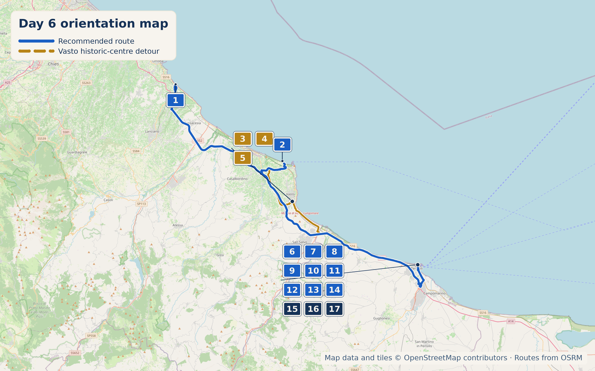

Overview
18 September 2026 is a Friday. This is the move into Molise, with a genuinely worthwhile coastal nature stop, a proper historic centre in Vasto, and Termoli waiting as the evening base.
Stops
- Why stop: A protected headland right on the SS16 outside Vasto — cliffs, one of Abruzzo's best beaches, genuinely undeveloped. 4.7★ across 6,259 reviews.
- Time required: 1–2 hours, or longer for a swim
- Practical note: Nothing is available on site — no bar, no bathroom. Bring water and snacks. Last bus back is 7:30pm if you're not driving.

- Why stop: Described locally as a citadel that was Greek, then Roman, then Spanish — a genuine hilltop historic centre, not a beach-resort backdrop. Palazzo d'Avalos alone is worth the €3.50 entry: archaeology, costume collections, paintings by the Palizzi brothers, a restored Neapolitan garden, open until midnight.
- Time required: 1–1.5 hours
- Hours: Palazzo d'Avalos 10:00am–1:00pm and 6:00pm–midnight daily
- Why stop: Panoramic promenade named after Guglielmo Amblingh, an Austrian commander in the service of the House of d'Avalos in the early 1700s. Views reach the Tremiti Islands and Gargano promontory on clear days.
- Time required: 15–25 min

- Why stop: Termoli's borgo antico sits on a promontory jutting into the Adriatic, ringed by a Swevian castle and a 12th-century Puglian-Romanesque cathedral. Castello Svevo was built by Frederick II to defend the port.
- Time required: Half day
- Why stop: 12th–13th-century Romanesque-Pugliese lower facade with a Gothic-era upper reconstruction after the 1456 earthquake, built over a pagan temple to Castor and Pollux. Holds the relics of San Basso and San Timoteo in an underground crypt with medieval mosaic flooring; "Termoli Sotterranea" combines the crypt and excavations.
- Time required: 30–45 min, longer if joining the underground tour
Coffee & Pasticceria
Founded in 1972 by three Zara brothers — genuinely "the history of pastry art in Termoli is indissolubly linked to this name," per a local write-up.
Since 1974/76, with a genuine succession story: founding owner Tonino La Verghetta handed over to Lorenzo Marciano shortly before his death in 2023. Ten pastry chefs, up to 50 varieties of cornetto. Signature: panettone al limoncello, exported across Italy in winter.
Dinner
Founded in 1975 by Nicolino Caruso and celebrating 50 years in 2025, this is the primary brodetto alla termolese reference. Its own tagline is "Il vero brodetto termolese è solo Da Nicolino," it has been featured on Czech national TV for this dish, and past patrons include Lucio Dalla, Catherine Spaak, and Alessandro Gassmann.
40-year family-run institution, widely called one of the best fish restaurants in Termoli, about €46/person with wine. Strong alternate rather than the brodetto reference.
Chef Antonio Terzano's restaurant, described locally as "more an institution than a restaurant."
Fried-fish takeaway since 2009, about €9 for a cone of fried calamari, genuinely local rather than tourist-trap.
Local Speciality
Brodetto alla termolese ('u vredette) — at least nine kinds of fish plus sweet peppers, distinct from every other Adriatic brodetto on this route.
What to Buy
Taralli al finocchietto from a bakery in the borgo. Panettone al limoncello from La Vastese if passing through Vasto in winter — out of season the rest of the year, worth knowing rather than asking and being disappointed.

Fourth-generation family business founded in 1925 by Giuseppe Roberti in Lentella, Abruzzo, specializing in porchetta ("Porchetta Lentellese," about 15kg, five natural ingredients) and ventricina, now run by Nico and Anna.
Hidden Gem

One of Italy's narrowest streets — 34cm at its narrowest point, in the borgo antico. Genuinely a squeeze; one reviewer notes it's "impossible... too big shoulder" and means it. A five-minute detour with a good story attached, not a destination in itself.
Cool, Interesting & Quirky
An annual reenactment on the night of 15 August of a 16th-century Ottoman pirate raid on the borgo, with the castle theatrically "set alight."
Accommodation
In the historic centre just above the port, run by Renata, who reviewers describe as going well beyond the basics — helping with parking, restaurant recommendations, even arranging a lost charger to be delivered to the Tremiti Islands.
Near Rio Vivo beach in the old casa dei marinai, quieter than the centre.
An albergo diffuso, with rooms spread across restored historic buildings, right on Piazza Duomo. The format itself is worth experiencing, and the location is unbeatable.
Today's Route & Timing
Organic Maps route legs (POIs remain visible)
Import Day 9 POIs once, then open each leg in order. The Google buttons above retain the complete route as a fallback.
Recommended Route:
via Vasto:
Optional stop maps: Punta Aderci Google Palazzo d'Avalos Google
Print timing summary: suggested 9:00am departure. Base direct day to Termoli (via the required A14 diversion around the collapsed SS16 Trigno bridge) is approximately 3h50–4h50, finishing around 12:50–1:50pm before dinner. The Vasto historic-centre detour (Palazzo d'Avalos and Loggia Amblingh) adds about 1h40–2h20. Punta Aderci adds 1–2 hours, longer for a swim. Under 8 hours is a comfortable day; 8–10 hours is a long day; over 10 hours is a very long day and a sign to drop an option.
Day 9 route map

Numbered points of interest
- B&B La Finestra Sui Trabocchi StartVia Lungomare di Gualdo 31, 66038 Marina di San Vito CH, Italy
GPS: 42.3096483, 14.4445601 - Riserva Naturale di Punta Aderci Nature reserveSentiero d'Accesso Punta Aderci, 66054 Vasto CH, Italy
GPS: 42.1800301, 14.6877337 - Palazzo d'Avalos Optional historic sitePiazza Lucio Valerio Pudente, 66054 Vasto CH, Italy
GPS: 42.1116174, 14.7102856 - Loggia Amblingh Optional viewpointVasto old town, 66054 Vasto CH, Italy
GPS: 42.1103135, 14.7100671 - Pasticceria La Vastese Optional food stopVia Ciccarone 98/A, 66054 Vasto CH, Italy
GPS: 42.1229066, 14.7109300 - Castello Svevo Historic siteLargo Piè di Castello, 86039 Termoli CB, Italy
GPS: 42.0042633, 14.9963357 - Cattedrale di Santa Maria della Purificazione Historic siteVicoletto Duomo, 86039 Termoli CB, Italy
GPS: 42.0052965, 14.9971312 - Vicolo Rejecelle Hidden gemVia Nocchiere Marinucci Salvatore 9, 86039 Termoli CB, Italy
GPS: 42.0049015, 14.9968963 - Zara Pasticceria Food stopVia Argentina 9/15, 86039 Termoli CB, Italy
GPS: 41.9987825, 14.9828334 - Ristorante Da Nicolino DinnerVia Roma 13, 86039 Termoli CB, Italy
GPS: 42.0035882, 14.9963207 - Trattoria Tipica L'Opera Dinner / alternateVia Adriatica 32, 86039 Termoli CB, Italy
GPS: 42.0023494, 14.9946932 - Osteria Dentro le Mura Dinner / alternateVia Federico Secondo di Svevia 3, 86039 Termoli CB, Italy
GPS: 42.0045521, 14.9965624 - Friggitoria Maramimmo Food stop / budgetCorso Fratelli Brigida 64, 86039 Termoli CB, Italy
GPS: 41.9996161, 14.9965564 - Roberti Store ShopVia Alfano 10, 86039 Termoli CB, Italy
GPS: 42.0017114, 14.9974386 - Le Dimore nel Borgo AccommodationVia Maro de Gregorio Pasquale, 86039 Termoli CB, Italy
GPS: 42.0048803, 14.9974687 - La Casa di Lelè Accommodation / alternateVia delle Lampare 8, 86039 Termoli CB, Italy
GPS: 41.9975505, 14.9970443 - Residenza Sveva Albergo Diffuso Accommodation / endPiazza Duomo 11, 86039 Termoli CB, Italy
GPS: 42.0054205, 14.9975873
OpenStreetMap-derived orientation map only, not turn-by-turn navigation. Import this day’s POIs once to keep its bookmark pins visible in Organic Maps navigation. Use the Organic Maps route legs above for POI-visible navigation; Google Maps remains the complete-route fallback.
If Time Is Tight
Skip Punta Aderci and Vasto both. Drive straight to Termoli, walk the borgo antico, see Rejecelle.
If You've Got Half a Day
Add a swim at Punta Aderci and an hour in Vasto's Palazzo d'Avalos before continuing to Termoli.
Skip It
🏆 Today's Winners
Road Trip Score
| Category | Rating |
|---|---|
| Food | ★★★★☆ |
| Coffee | ★★★☆☆ |
| Atmosphere | ★★★★★ |
| Photography | ★★★★★ |
| History | ★★★★☆ |
| Young Traveller Appeal | ★★★★☆ |
| Worth Detour | ★★★★★ |